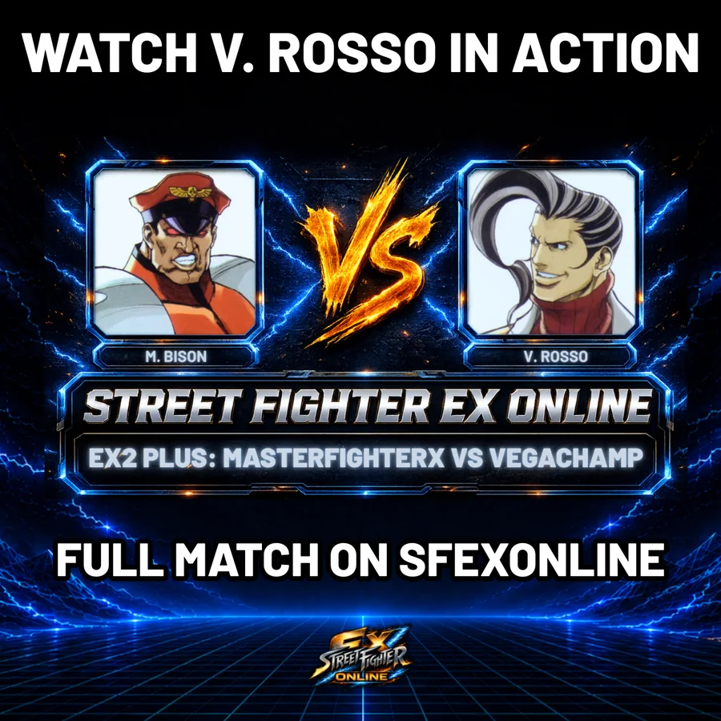

← ALL EX FIGHTER GUIDES
EX FIGHTER GUIDE #3 • EX2 PLUS
V. Rosso
V. Rosso turns pressure into panic.
Once Rosso gets the knockdown, the pressure stacks fast: a charged fireball for oki, a well-timed EXCEL, then straight back into the three-hit string to close the round.
01SEE V. ROSSO IN MOTION
SHORT GAMEPLAY EXAMPLE

02 • CHARACTER GUIDE
WHY PLAY V. ROSSO?
BEST FOR: Players who like strong footsies, tricky movement and turning every knockdown into another guessing game.
- Good footsies and command dash mobility
- 50/50 fireball mix-ups
- Strong mix-ups after knockdowns
Character insight for Guide #3: @eruditemasher.

▶03 • FEATURED MATCH
WATCH V. ROSSO IN A REAL SET.
MasterFighterX vs VegaChampMasterFighterX’s Bison brings serious pressure, but VegaChamp’s V. Rosso keeps turning knockdowns into another guess and never lets the set settle.